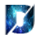

 Shaundegr8's Beta Repo
Shaundegr8's Beta Repo
is a repo for my design and tweak betas :).
Add Source to Cydia
AppleReversal
This is a Package adds a set of LiveWallpapers to the LiveWallpaper section in wallpapers! These wallpapers simulate the "reverse" effect that many crave for in LiveWallpapers!
More info